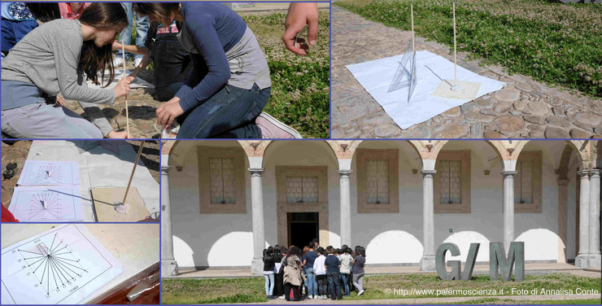
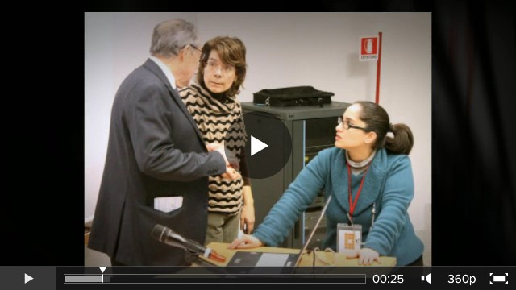
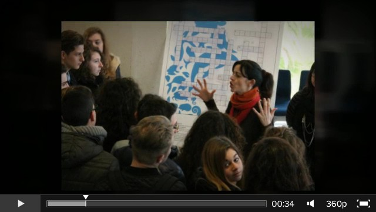
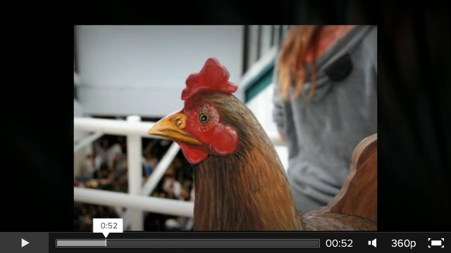
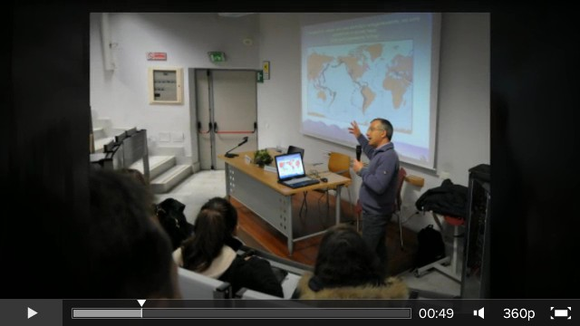
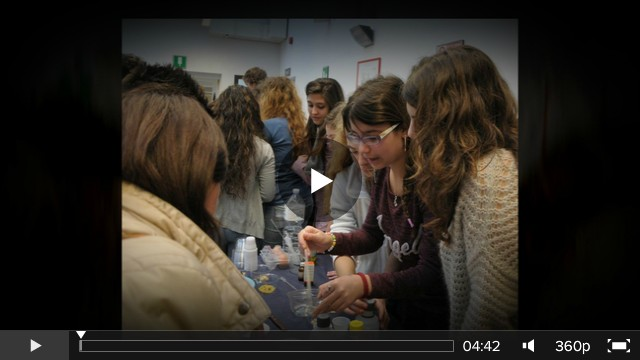
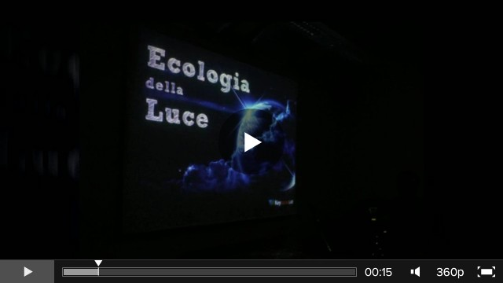
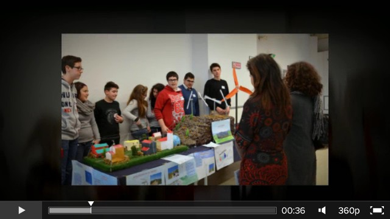

You are hereNews
News
Le ultime notizie di PalermoScienza
Domenica alla GAM con PALERMOSCIENZA
Domenica 26 aprile alle ore 11.00, gli esperti di PALERMOSCIENZA, in collaborazione con la Galleria d'Arte Moderna di Palermo e nell'ambito dell'iniziativa Al Museo con la Famiglia, condurranno Costruiamo un orologio, laboratorio creativo dedicato alle famiglie. Scopo finale del laboratorio è la realizzazione di una meridiana partendo dall'osservazione e dalla descrizione del dipinto Veduta di Monte Catalfano di Francesco Lojacono.
Il laboratorio è a pagamento. Qui altri dettagli.
Per informazioni e prenotazioni contattare la Galleria d'Arte Moderna ai seguenti recapiti:
- 091.8431605
- didattica@gampalermo.it
- http://www.gampalermo.it

Bella e Possibile, la matematica al crocevia dei saperi
Siam giunti all'ultimo giorno di Esperienza inSegna!
E anche questa edizione volge al termine! L'ultima mattina di Esperienza inSegna è trascorsa alla ricerca di exhibit non ancora scoperti, o assistendo alle repliche dei diversi spettacoli in calendario. Tra gli appuntamenti del giorno: la conferenza I caratteri e la storia del paesaggio agrario del Mediterraneo a cura di Giuseppe Barbera, Dipartimento di Scienze agrarie e forestali, Università di Palermo; e la conferenza-spettacolo La bellezza: energia per il cervello. Come la conoscenza, le arti... plasmano la mente umana a cura di Mario Ferreri ed Eliana Danzì, con il Gruppo SudOrff della Scuola secondaria di 1° grado Vittorio Emanuele III di Palermo.
E sul finire, la premiazione dei video prodotti dalle scuole, creati dagli studenti e dai docenti, nei quali i protagonisti della manifestazione raccontano e descrivono gli exhibit presentati in mostra dal punto di vista didattico.
A breve, una pillola "aggiuntiva"...
Penultimo giorno di pillole!
Anche quest'anno Esperienza inSegna ha riproposto il convegno Memoria scientiæ dal titoloAnimali che si nutrono di animali - Teorie, atteggiamenti e rappresentazioni dell'alimentazione nel mondo an tico e medievale a cura di Pietro Li Causi e Andrea Libero Carbone e con gli interventi di Jean-Louis Labarrière, Athena Kirk, Marjon Peirens e Roberto Marchesini.
Come nuovi appuntamenti del giorno, il workshop I cambiamenti climatici, il "budget Carbonio" e la rivoluzione energetica a cura di Giuseppe Onufrio, Greenpeace e il laboratorio La tintura naturale e sintetica delle fibre tessili a cura di Associazione YOCOCU.
Tra gli spettacoli le repliche di Intervista fotografica a Newton a cura dell'Istituto comprensivo L. Pirandello di Mazara del Vallo e di Acqua e… gli Altri, spettacolo teatrale a cura di Gloria Calì con gli alunni della Scuola Secondaria di 1° grado Cosmo Guastella di Misilmeri.
La giornata si è conclusa con l'interessante conferenza Sole e ombre come maestri di geometria: alcuni insegnamenti di Emma Castelnuovo durante la quale il maestro elementare Franco Lorenzoni, dopo la proiezione di un breve video sull'"Officina matematica di Emma Castelnuovo" e una sua intervista audio, ha ripercorso alcuni momenti del suo straordinario itinerario di ricerca, che hanno reso il suo metodo riferimento obbligatorio per chiunque tenga a riconnettere la matematica alla realtà e l'apprendimento al desiderio di conoscenza.
Sesta pillola da ingerire!
La sesta giornata di Esperienza inSegna si svolge, per i numerosissimi visitatori, tra laboratori, workshop e visite guidate.
Novità del giorno, lo spettacolo teatrale Acqua e… gli Altri a cura di Gloria Calì, con la partecipazione dei giovani attori della Scuola Secondaria di 1° grado Cosmo Guastella di Misilmeri.
Bravissimi!
Siamo giunti al quinto giorno di Esperienza inSegna!
Conferenza della giornata L'energia del Pianeta Terra: terremo ti , vulcani e geotermia di Giorgio Capasso e Paolo Madonia, Istituto nazionale di geofisica e vulcanologia (INGV).
Oggi una visita a uno dei numerosi appuntamenti fissi della manifestazione: il laboratorio Google non basta! Esperienze di ricerca sul tema dell'energia eolica a cura del Sistema bibliotecario e Archivio storico di Ateneo.
E poi, sempre in giro per gli affollatissimi spazi del Polididattico alla inevitabile ricerca di qualcosa di nuovo da sperimentare.
Bredo lascia il passo ad Aaron... 
Quarta mattina ricca di esperienze e... con una presenza speciale!
Tra i corridoi di un affollattissimo Polididattico, la quarta mattina trascorre densa di appuntamenti ed exhibit da sperimentare. Due le conferenze del giorno: "Gli ecosistemi forestali: conservazione e valorizzazione della biodiversità" di Giuseppe Venturella del Dipartimento di Scienze agrarie e forestali, Università di Palermo e "Pane amaro La col ti vazione del frumento nei la ti fondi della Sicilia interna" di Salvatore Nicosia, Istituto Gramsci siciliano.
Poi una visita al laboratorio "Il ruolo delle biotecnologie alimentari e dei microrganismi nella valorizzazione delle produzioni agroalimentari siciliane" a cura del Dipartimento di Scienze agrarie e forestali, Università di Palermo e infine ad assistere all'incontro a cura del Dipartimento di Matematica e Informatica dell'Università degli studi di Palermo (SoCo Group) per scoprire le potenzialità di uno strumento innovativo come quello della stampa 3D, e i relativi campi di applicazione.
E poi ancora in giro a sperimentare nuove cose finché, tra la nutrita folla di visitatori, compare qualcuno davvero capace di attirare l'attenzione. Vedere per credere!
Esperienza inSegna 2015 nella puntata di oggi di Buongiorno Regione Sicilia
Abbiamo avuto il piacere di essere stati intervistati nella puntata odierna di Buongiorno Regione Sicilia. Se ve la siete persi, è ancora visionabile qui (intorno al tempo 17:40).
Buona visione!
Esperienza inSegna: terzo giorno, terza pillola!
Terza mattina dedicata a diversi appuntamenti. Tra i laboratori della giornata: Educazione al consumo consapevole a cura di Coop Sicilia, Conosciamo la frutta che mangiamo? a cura del Dipartimento di Scienze agrarie e forestali - Università di Palermo e infine il laboratorio e la visita guidata della Biblioteca di Ingegneria per Google non basta! Esperienze di ricerca sul tema dell'energia eolica a cura del Sistema bibliotecario e Archivio storico di Ateneo.
Tra gli appuntamenti riproposti: il workshop L'ecologia della luce, Senza luce si può… e La luce è vita a cura di EcoCampus - Istituto Salesiano Don Bosco - Ranchibile e lo spettacolo Intervista fotografica a Newton, a cura dell'Istituto comprensivo Luigi Pirandello di Mazara del Vallo.
Oggi il gradito ritorno della conferenza interattiva nella formula Gli studenti interrogano dal titoloVita nell'Universo: avventure scientifiche e suggestioni filosofi che al cospetto delle stelle, durante la quale sono stati tracciati due filoni di indagine, scientifico e filosofico, attraverso gli interventi del professore Maggio, docente di astronomia, e il professore Palumbo, docente di filosofia teoretica, moderati dalla professoressa Patrizia Rizzuto.
Piacevole novità di questa edizione, infine, l'incontro con la giornalista Serena Manfrè che ha parlato del suo libro per ragazzi "Regine della Scienza" incentrato su cinque biografie di scienziate - Rita Levi Montalcini, Maria Montessori, Caroline Herschel, Suor Celeste e Ipazia d'Alessandria. 
Secondo giorno di Esperienza inSegna, secondo giorno di pillola
Secondo giorno in giro per gli spazi del Polididattico, alla scoperta degli exhibit raccontati dagli studenti e partecipando alle attività previste. Tra gli appuntamenti del giorno:
- il laboratorio A caccia di spettri - Fare per Capire, curato dell'Associazione PALERMOSCIENZA e dedicato ai più piccoli, durante il quale è stata analizzata la scomposizione della luce usando un prisma e uno spettroscopio di cartone;
- il workshop L'ecologia della luce, Senza luce si può… e La luce è vita a cura di EcoCampus - Istituto Salesiano Don Bosco - Ranchibile.
Appuntamento a domani con altre esperienze!